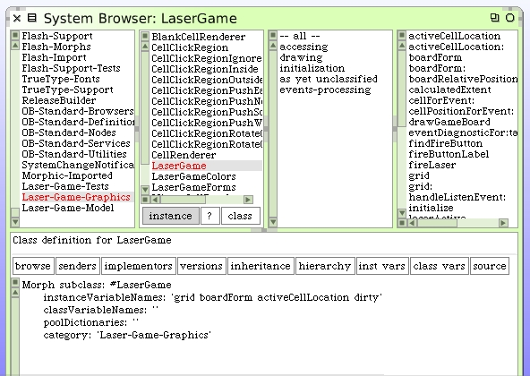
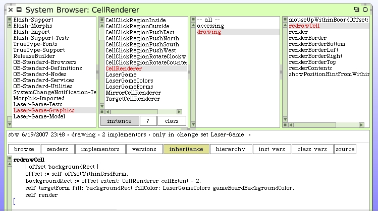
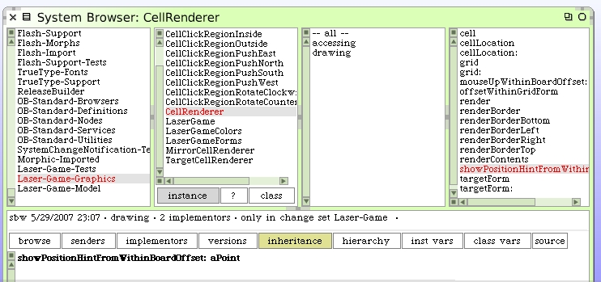
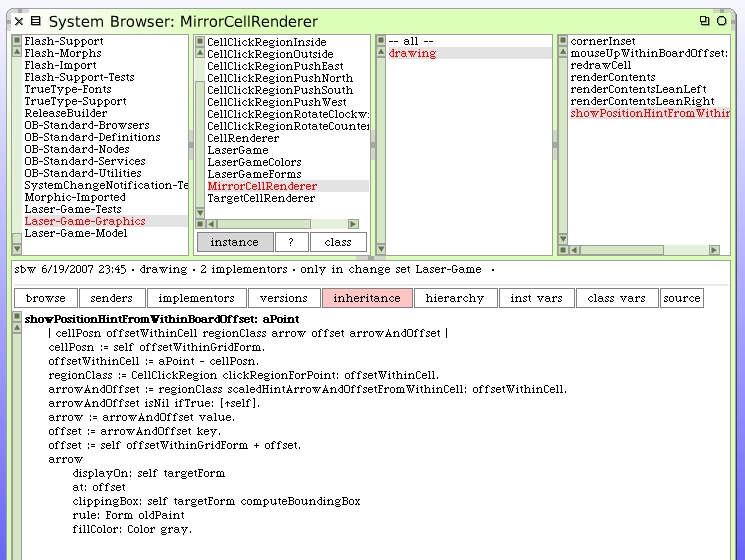
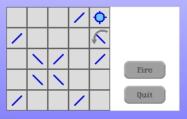
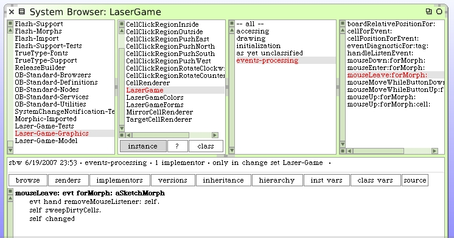

Our immediate task is to devise a strategy to handle refresh of our grid cells when the cursor travels quickly.
A couple ideas come to mind. By far the simplest solution is to automatically redraw all the cells in the game board before any one cell has a hint drawn over it. This would assure a clean slate before drawing. The only drawback is the performance cost with drawing all the cells that were never impacted by a cursor visit.
A more elaborate approach could be to keep a "dirty" flag for each cell which is set whenever a cursor hint is drawn on the cell. Then, just before a cell hint is drawn, sweep through all the cells on the game board and for those that have their "dirty" flag set, clear the flag and redraw that cell. We could probably store the "dirty" flag for every cell in the game morph.
Between those two approaches I'm okay with trying out the more elaborate approach since it would not be difficult to code. I'm also guessing that the sweep/detect/clean-up algorithm would not have much of a performance hit.
We have to add the "dirty" flag to the LaserGame morph. It doesn't make sense to put it on the Cell objects since this is not really a "model" behavior but rather a behavior of the graphics system. Also, we cannot put the instance variable on the CellRenderer class hierarchy because those objects are created on-the-fly and cannot be counted on to retain state information. The most logical place is the LaserGame class itself since it's managing the events anyway.
Let's begin by adding an instance variable to the LaserGame class.
We want this instance to hold a Dictionary of all the dirty cells. Write some simple accessors for the variable and use lazy initialization to set the value to an initialized empty Dictionary.
dirty: aDictionary
dirty := aDictionary
dirty
dirty isNil ifTrue: [self dirty: Dictionary new].
^dirty
We need methods to mark a cell as dirty as well as clean. We also need a way to test if a cell is dirty. Here are the three new instance methods on LaserGame class.
setDirty: aCell
self dirty at: aCell gridLocation put: true
setClean: aCell
self dirty removeKey: aCell gridLocation ifAbsent: []
isDirty: aCell
^self dirty at: aCell gridLocation ifAbsent: [false]
We can now write the cell sweep clean method on LaserGame.
sweepDirtyCells
| cell renderer |
1 to: self grid numberOfColumns do: [:x |
1 to: self grid numberOfRows do: [:y |
cell := self grid at: x@y.
(self isDirty: cell) ifTrue: [
renderer := CellRenderer rendererFor: cell grid: self grid form: self boardForm.
renderer redrawCell.
self setClean: cell
]]].
We now modify the hint drawing code to sweep old dirty cells and to mark the current cell as dirty.
mouseMoveWhileButtonUp: evt forMorph: aSketchMorph
| cell renderer pixelPositionWithinBoard |
cell := self cellForEvent: evt.
renderer := CellRenderer rendererFor: cell grid: self grid form: self boardForm.
pixelPositionWithinBoard := self boardRelativePositionFor: evt.
self sweepDirtyCells.
renderer showPositionHintFromWithinBoardOffset: pixelPositionWithinBoard.
self setDirty: cell.
self changed
We should delete the code for #redrawCell from the mirror cell renderer and put it in the general superclass CellRenderer.
As a final step we can clean up the diagnostics code in the renderers.

Note the cell redraw code was also removed from the hint drawing method since it is no longer needed. You should be able to move your cursor around over the top of the LaserGame morph now and no longer see the ghost arrows as before.
Oops. We still have one case where we can get the ghost arrow. When the cursor leaves the grid entirely we need to perform a sweep.
You should now be able to manuver your cursor/mouse around your LaserGame morph, even quickly, and see the hint arrows only appear while you are over specific mirror cells. Our next task is to deal with the laser beam status while rotating mirrors.